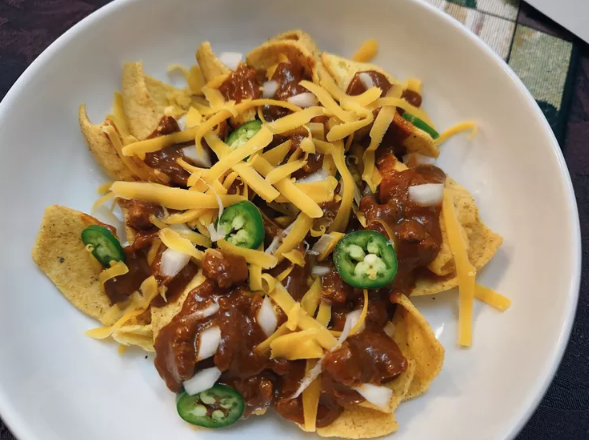

Frito pie

Description
Frito pie is a dish popular in the Midwestern, Southeastern, and Southwestern United States, basic ingredients for which are chili, cheese, and corn chips. Additions can include salsa, refried beans, sour cream, onion, rice, or jalapeños (sourced from Wikipedia).
Ingredients
Chili:
- Ground beef;
- Water;
- Tomato paste;
- Chili powder;
- Ground cumin;
- Onion powder;
- Garlic powder;
- Chili beans.
Toppings:
- Diced onion;
- Sliced jalapeno;
- Cheddar cheese;
- Corn chips.
Steps
- Heat a large skillet over medium-high heat;
- Cook and stir ground beef in the hot skillet until browned and crumbly, 5 to 7 minutes;
- Drain and discard grease;
- Stir in water, tomato paste, chili powder, cumin, onion powder, garlic powder and beans;
- Cook until heated through, about 3 minutes;
- Divide corn chips into 4 bowls, top with the chili mix, then sprinkle with diced onions, jalapeño slices, and Cheddar cheese.
Main page